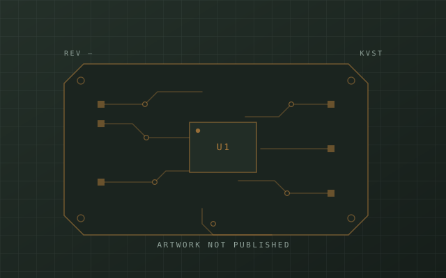

U4 · Dletabotix · Employer work
Dletabotix Kit Hardware
Two boards behind a classroom robotics kit: a multi-function controller that students assemble themselves, and a USB-host programmer that lets a whole bench of BBC micro:bits be reflashed without a PC.

What I worked on
At Dletabotix I design the electronics for their classroom robotics kits. Two boards so far, both cost-optimised 2-layer designs, because a classroom set is bought by the dozen.
The constraint that shapes both is that the user is actively trying to get it wrong, and is meant to. Every external connection is keyed so a sensor can't be seated backwards, the through-hole parts are the ones students solder, and the microcontroller sits in a socket so a board killed by a wiring mistake is a swap rather than a rework job.
The controller board
An Arduino Nano carrier with dual H-bridge drivers across four motor channels, keyed connectors for ultrasonic, IR, light and RGB modules, and Bluetooth for control from a phone. Power is a two-cell Li-ion charger with protection, fed from USB-C or a barrel jack, with switching regulators for the rails. A robot on a bench with a cable in it should still drive, so charge and load current are managed separately.
The micro:bit programmer
A micro:bit is normally programmed by dragging a file onto the USB drive its debug interface exposes — fine with one, miserable with thirty and one teacher.
This board uses an ESP32-S3 in USB host mode to mount that drive itself and write the firmware image, sourced over Wi-Fi or from on-board storage. Load it once, then plug in each micro:bit in turn. A TFT and buttons drive the flow, and a firmware-enabled 5 V rail means the target is only live when the programmer intends it.
Bring-up
First-article checks on each board — power rails, peripherals, current draw — then signal-level fault-finding with a scope and logic analyser across prototype iterations.
On the firmware side I also wrote the kit's mode handling. The line sensors calibrate themselves on every run rather than trusting a trimmer set at the factory, which is what lets the kit work on whatever the classroom floor happens to be.